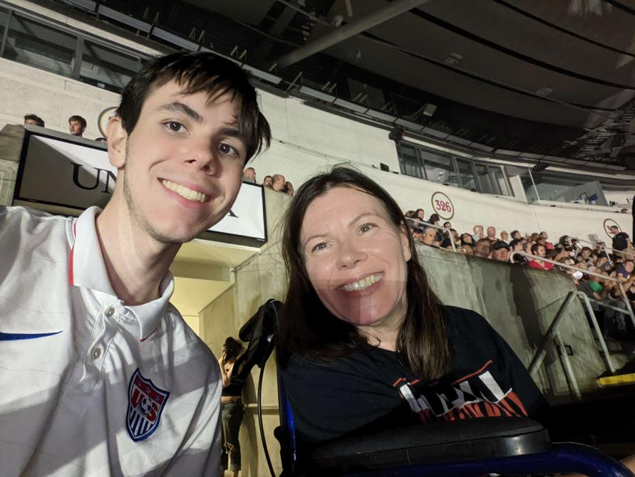

My ITIS3135 Introduction
Myself and my mom at the last Rage Against the Machine Concert in 2022
- Personal Background: I was born in Durham, raised in Cary, NC. I love Soccer, Baseball, and Basketball. I also did the mascot name incorrectly but I like the name so I'm sticking with it.
- Professional Background: I've worked for Harris Teeter for the past summers and I plan on getting an internship soon!
- Academic Background: I went to High school in Cary and I'm a Junior at UNCC.
- Primary Computer Platform: Windows
- Courses I'm taking and why:
- ITIS3135: Because the teacher is cool.
- LBST2301: My advisor told me it was required.
- MATH2164: Required for my major.
- LBST2102: It sounded interesting.
- Funny Item to remember me by: I own over 30 soccer jerseys. I am not obsessed, just a collector totally.